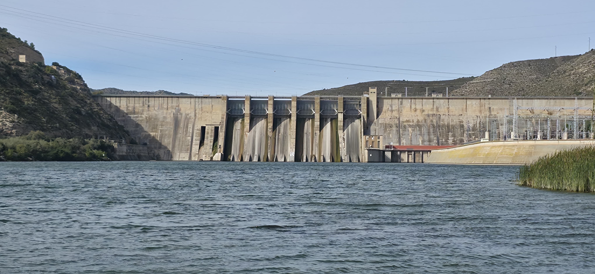
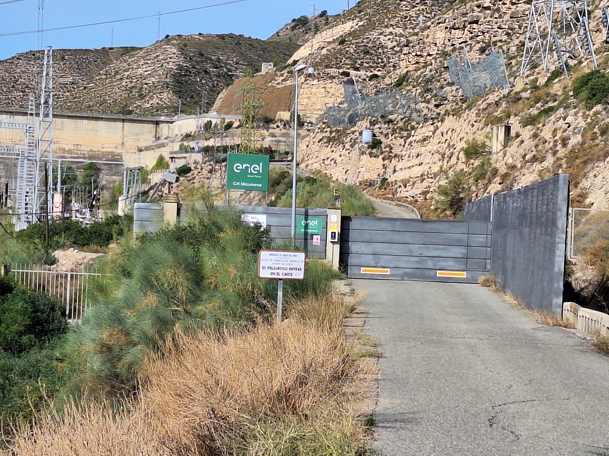
L’embassament de Mequinensa, conegut com la Mar d’Aragó, és una de les obres hidràuliques més importants del segle XX a Espanya. Impulsat per l’empresa ENHER a partir de 1955, el seu objectiu era generar energia, regular el cabal del riu Ebre i evitar riuades. Les obres, iniciades el 1958, van ser molt complexes i van patir diverses dificultats tècniques i inundacions, però finalment es van completar el 1966, començant a omplir-se fins a la seva cota màxima el 1969.
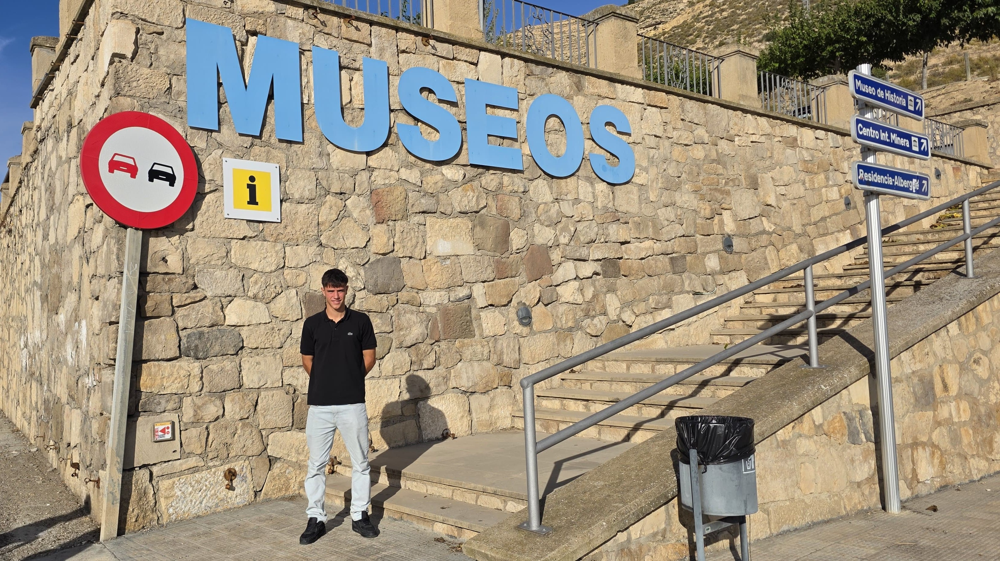
La creació de l’embassament de Mequinensa va provocar un gran impacte social, ja que el vell poble va quedar submergit i els seus habitants van ser traslladats a una nova localització. Aquesta decisió va comportar la pèrdua de terres i mines, transformant l’economia local. Amb els anys, Mequinensa s’ha convertit en un símbol de superació i memòria, amb museus que recorden el poble vell.
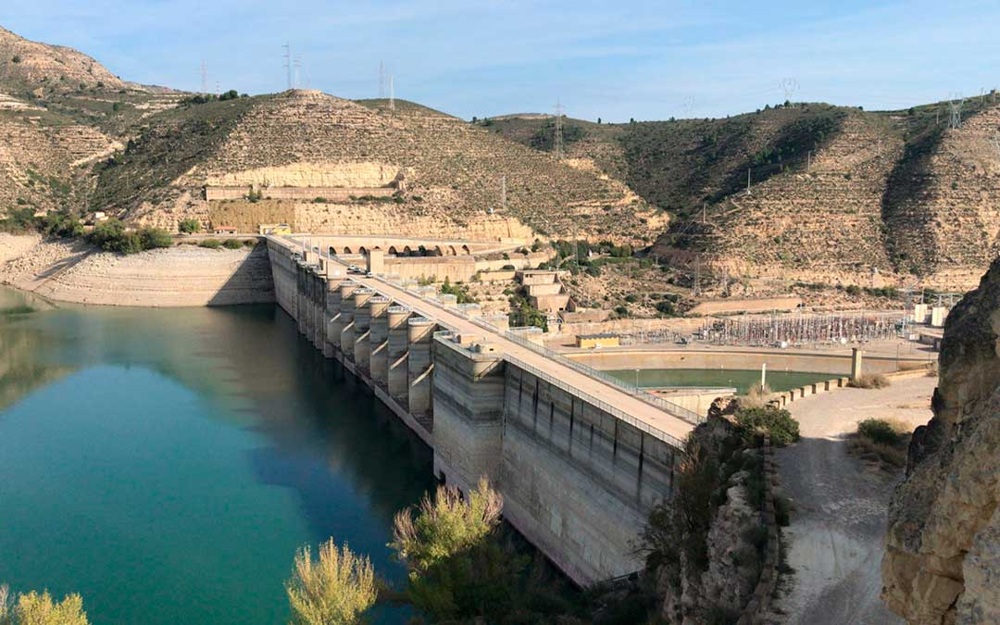
L’embassament hidroelèctric de Mequinensa es troba just aigües amunt de la confluència dels rius Ebre, Segre i Cinca, al límit entre Saragossa i Osca, a la comarca del Baix Cinca. Té una capacitat màxima de 1.530 hm³ i una superfície inundada de 7.540 hectàrees, estenent-se més de 110 km riu amunt. La seva presa de formigó de gravetat té 400 m de longitud, 79 m d’alçada i més de 60 m d’amplada a la base, amb compuertes i sobreeixidors que regulen l’aigua. La central hidroelèctrica, amb quatre turbines Kaplan, produeix electricitat suficient per subministrar electricitat a més de 300.000 llars.
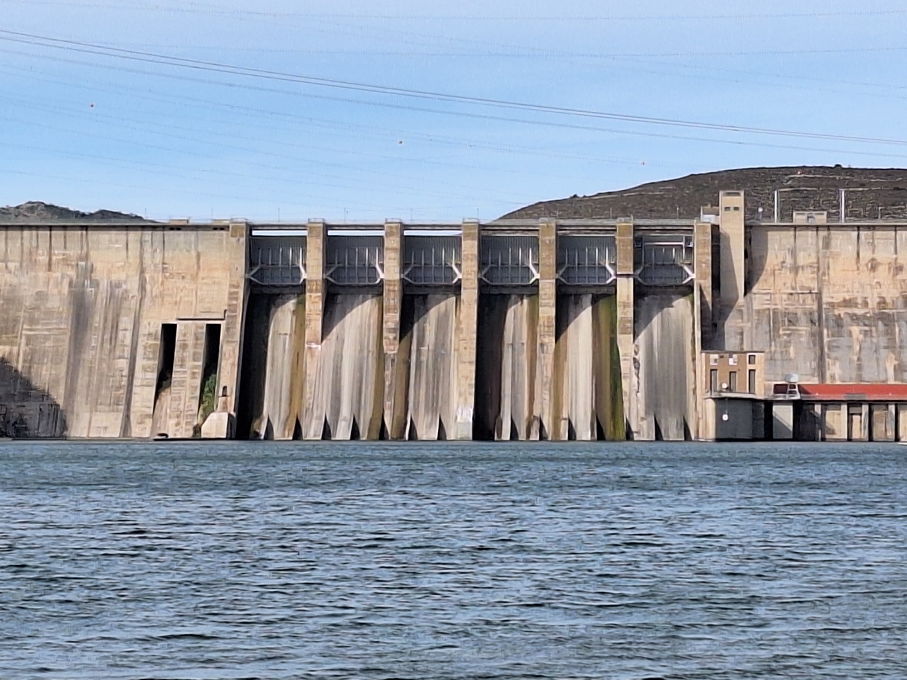
L’embassament de Mequinensa combina funcions hidroelèctriques i reguladores, aprofitant el desnivell del riu Ebre per generar energia renovable. Coordinat amb Riba-roja, optimitza la producció elèctrica i controla riuades, regadius i cabals ecològics.
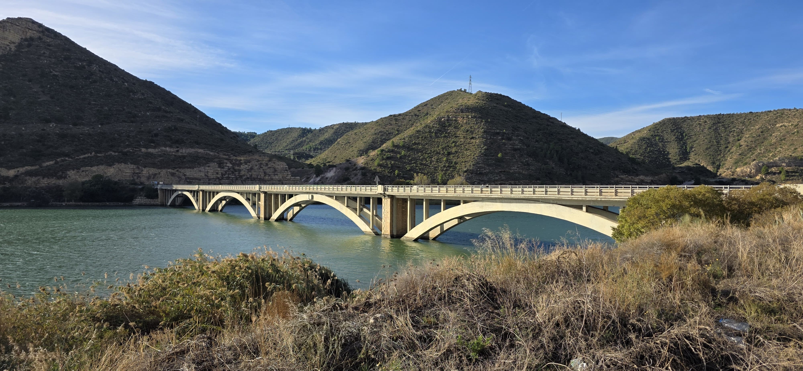
A més de la presa i la central, l’embassament de Mequinensa compta amb carreteres, ponts, edificis de control, zones recreatives i embarcadors. També disposa de línies d’alta tensió que transporten energia, convertint-lo en un centre d’enginyeria, economia i turisme per a la zona.
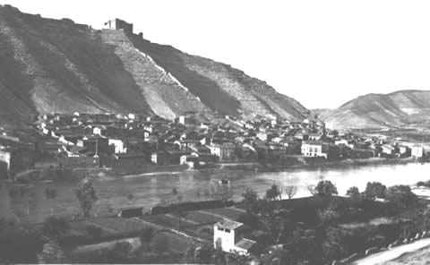
La construcció del pantà va suposar una crescuda del riu Ebre, aquest fet va provocar una situació tràgica en l'antic poble de Mequinensa. El poble vell va quedar parcialment inundat a causa de l'obra que estava executant l'ENHER. Els seus habitants van viure amb una sensació d'impotència en veure que les seves cases s'estaven inundant.
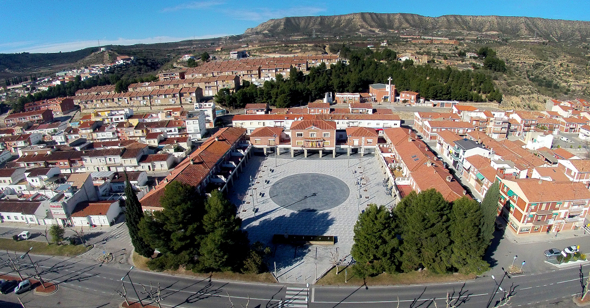
L'ENHER va intentar buscar solucions per als mequinensans i les mequinensanes. Primer van pensar a fer un mur de contenció per a protegir l'antic poble de l'aigua de l'Ebre, per diferents factors, aquesta solució no es va dur a terme. La solució que van dur a terme fou construir un nou poble a 2 km, aquest seria la nova Mequinensa.
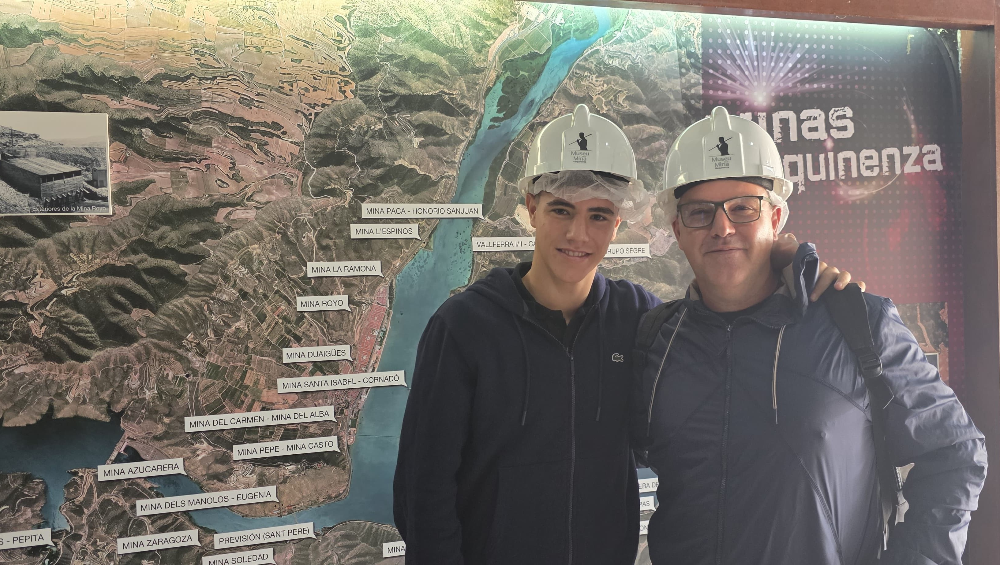
A més de quedar parcialment inundat el poble, també van quedar inundades moltes mines i molts cultius. La gent es va quedar sense feina, sense casa i sense poble. Les solucions que l'ENHER donava, no eren prou convincents. Finalment, entre els anys 60 i els 70, la població de Mequinensa va passar dels 6400 habitants a aproximadament 3000 habitants.
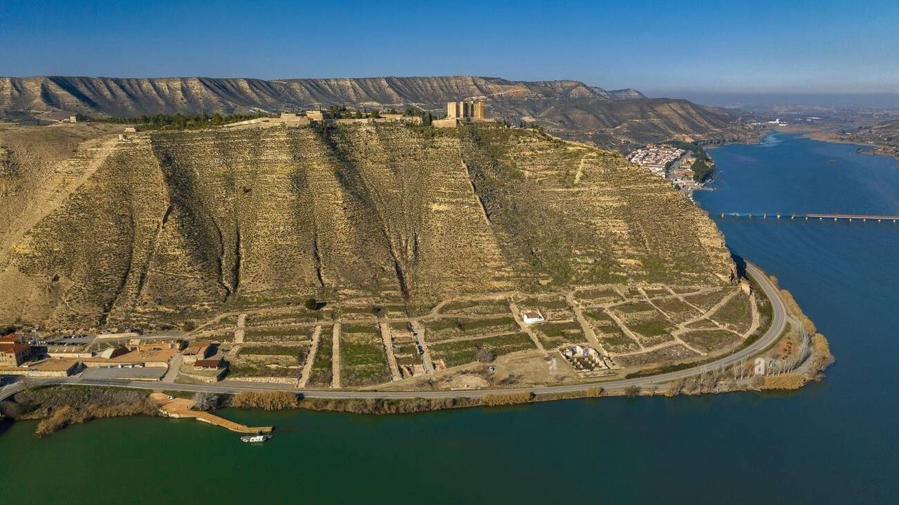
A mesura que s'anaven construint cases al poble nou, les cases del poble vell s'anaven enderrocant. Un dia podia estar casa teva, però l'endemà podia ja no estar. Era en èpoques franquistes, la gent del poble no podia fer-hi res i això va suposar un impacte molt dur per als més grans, els quals ho havien perdut tot. S'havien quedat sense la seva essència.
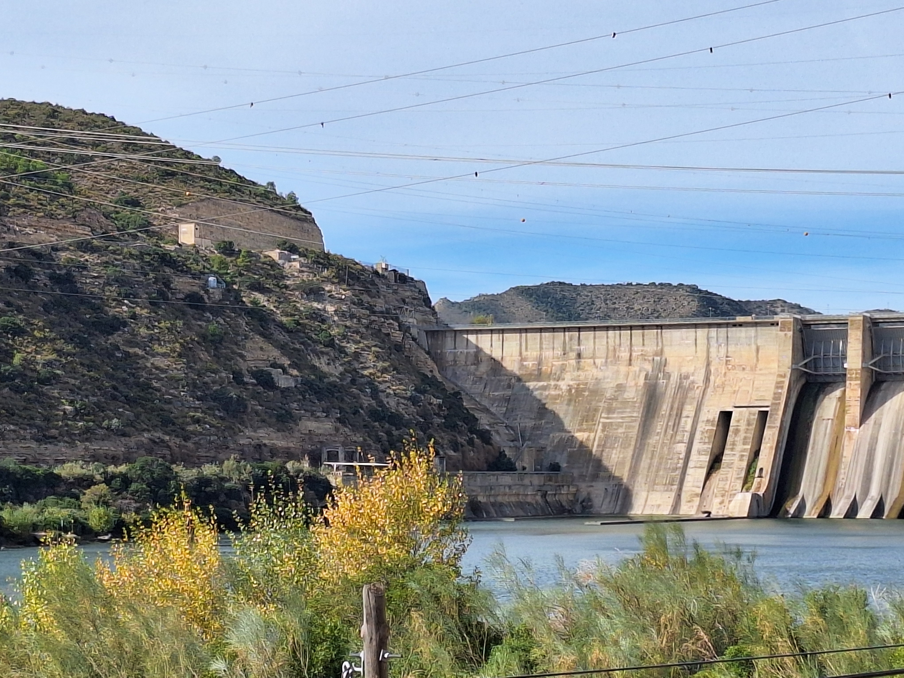
En la primera prova de l'embassament es van obrir fissures en la presa, aquest fet va causar molta por a la població local que els ho recordava a tragèdies semblants, com la del llac de Sanabria on va morir molta gent. Dones i nens van sortir a manifestar-se, perquè la construcció de l'embassament ja havia generat massa estralls.
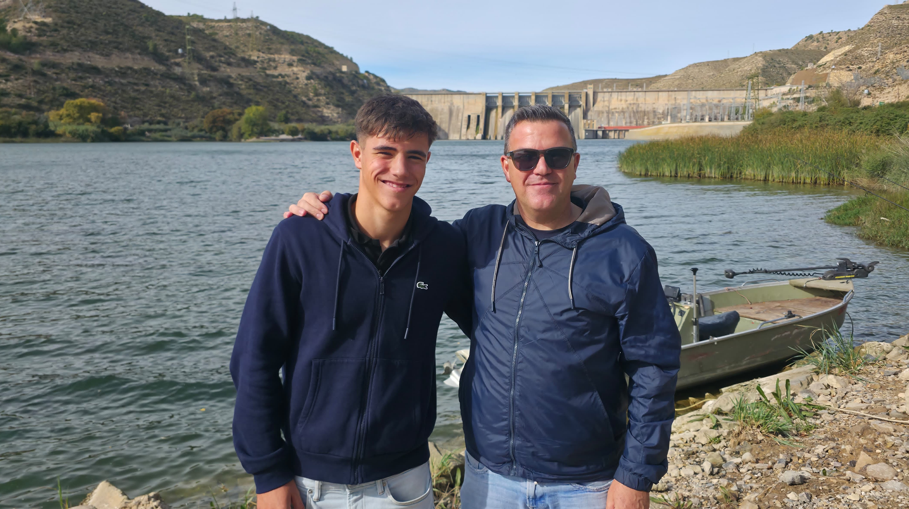
Actualment, Mequinensa és un poble on hi ha pesca esportiva, hi celebren tradicions, la gent viu en normalitat, els joves poden aprofitar l'aigua per a banyar-se, etc. En resum, Mequinensa ha sabut continuar cap endavant, sense importar totes les pedres que s'ha trobat en el seu camí.